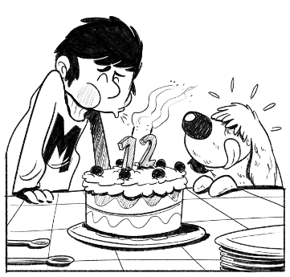
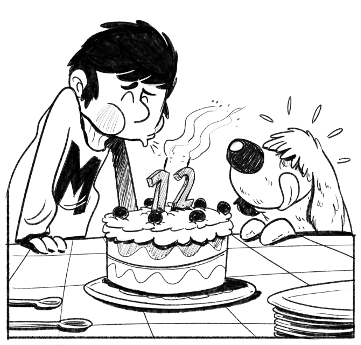

Capítol 1: Vol a Twelville(Unitat 1: Xifres i nombres) |

Capítol 2: La coreografia(Unitat 2: Divisibilitat) |

Capítol 3: Dotzè aniversari(Unitat 3: Definició de fraccions) |
Continuarà... |
Acompanya a en Mat en les seves peripècies per Izeland y desvelarás els misteris que amaga aquesta illa foradada.
A més a més, de la mà d'en Mat, descobrirás les meravelles de les matemàtiques.
Capítol 1: Vol a Twelville(Unitat 1: Xifres i nombres) |
Capítol 2: La coreografia(Unitat 2: Divisibilitat) |

Capítol 3: Dotzè aniversari(Unitat 3: Definició de fraccions) |
Continuarà... |